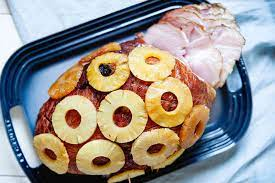

Baked Ham with Pineapple & Brown Sugar Glaze

Description
This deliciously sweet ham will forever change your family's Thanksgiving.
Who would've thought that just these two ingredients would make something so memorable.
Ingredients
- Ham (of your choice)
- Canned pineapple (If using fresh pineapple get organic pineapple juice.)
- Brown sugar (light or dark)
Steps
- Step 1. Read the baking directions on the hame and preheat the oven to the temperature on the directions. Then place the ham in a oven safe pan.
- Step 2. Leave the juice in the can. Take the pineapple slices and put them on the ham using toothpicks.
- Step 3. Take the pineapple juice and mix it with the brown sugar. How much brown sugar is based on how sweet you would like it to be. Make sure to mix it until there are no clumps of sugar left.
- Step 4. Pour the mixture all over the ham. Make sure to get in between the pre-cut slices. Then put it in the oven and set your timer.
- Step 4. Take out the ham and use a spoon to scoop the juices under the ham on top. Finally it's time to enjoy your delicious ham!